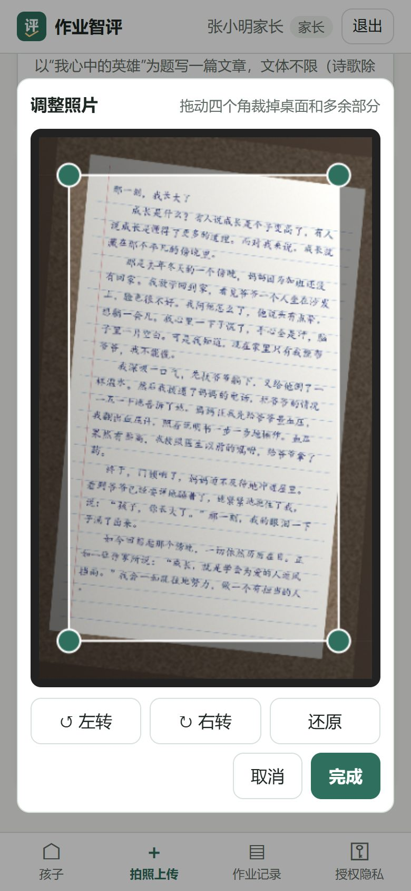
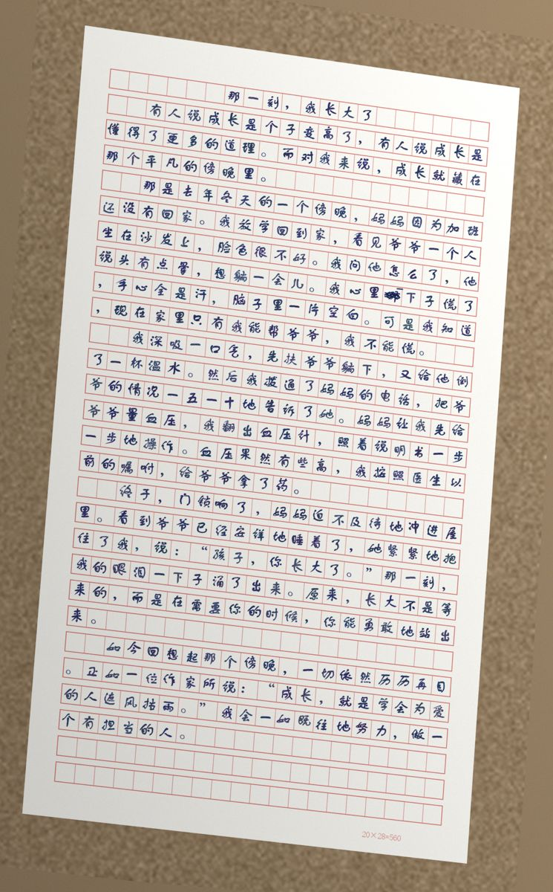
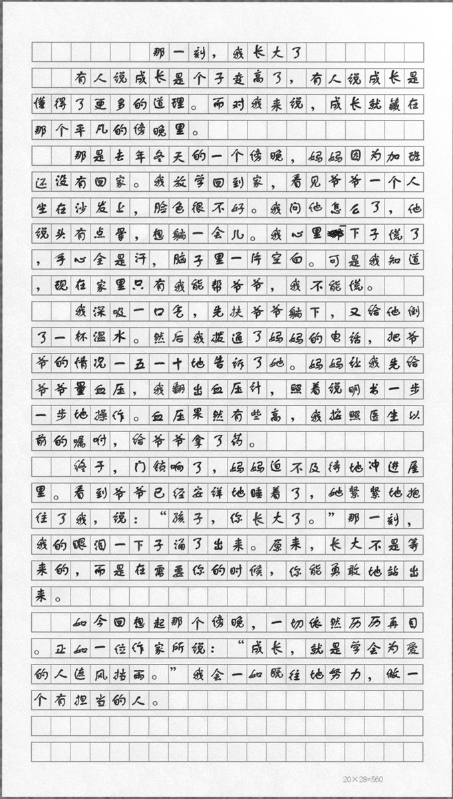

OpenCV 矫正
按 EXIF 转正并删除 GPS 等元数据。检测纸张四边形做透视矫正，用投影法纠偏，去阴影增强，裁边，多页拼接成长图。
一篇 800 字作文细批要几分钟，一个班就是一两个小时。家长想知道孩子哪里弱，往往只能看到一个分数。
系统先按量规打出分项分、圈出错别字和语法错误、写好评语草稿。老师只需要核对和修改，每次修改都会留下记录。
调用手机相机，拍完可以直接裁剪、旋转；网络不好时自动重试。看得到老师复核后的分数、批注和孩子的学习画像。
班级看板汇总分数分布和共性错误，还会持续比较 AI 初评与老师复核的一致性，用数据决定 AI 能放手到什么程度。
下面的画面都截自真实运行的系统（手机尺寸）。数据是程序合成的演示作业，评分来自离线规则模拟。

FastAPI 同时提供 API 和静态前端，一条命令就能启动。识别和评分都抽象成 provider：离线规则、云端大模型、服务器上的本地模型，切换时只改配置。
按 EXIF 转正并删除 GPS 等元数据。检测纸张四边形做透视矫正，用投影法纠偏，去阴影增强，裁边，多页拼接成长图。
提示词要求模型保留学生原有的错别字和语法错误，看不清的字记为 [?]。这些都要留给评分，不能在识别阶段被“改正”。
输出总分、分项分、扣分、错误（类型 + 原文引文）、评语和置信度。量规用 YAML 写，档次、维度、扣分规则都写在里面。
越界的分数截断，总分由服务端重新计算，按引文在原文中定位错误，自动定档。低置信、贴近档次边界、低分的作业标记为建议复核。


样张由程序合成：10 种手写字体的笔迹，中文用作文格稿纸，偶尔有涂改，再模拟手机斜拍。合成样张比真实学生字迹好认，识别准确率要用真实作业来测，见“现状”一节。
移动端优先的响应式设计，按角色显示不同的导航和权限。所有截图均由无头 Edge 自动截取，数据为演示数据。
内置 5 套：中考英语书面表达（20 分五档）、高考英语应用文（15 分五档）、高考作文（基础等级 40 + 发展等级 20）、简答/数学（逐题给分）、小论文（100 分）。各维度满分之和必须等于总分，否则校验不通过。
| 维度 | 满分 | 一等 | 二等 | 三等 | 四等 |
|---|---|---|---|---|---|
| 基础等级·内容 切合题意、中心突出、内容充实 | 20 | 20–16 | 15–11 | 10–6 | 5–0 |
| 基础等级·表达 符合文体、结构严谨、语言流畅 | 20 | 20–16 | 15–11 | 10–6 | 5–0 |
| 发展等级 深刻、丰富、有文采、有创新 | 20 | 20–16 | 15–11 | 10–6 | 5–0 |
| 扣分项 | 规则 | 上限 |
|---|---|---|
| 错别字 | 每 1 个扣 1 分，重复的不计 | 5 |
| 缺标题 | 扣 2 分 | 2 |
| 字数不足 | 每少 50 字扣 1 分 | 10 |
| 标点错误 | 错误多的酌情扣分 | 2 |
// 模型只输出它要判断的内容；位置和总分由服务端计算 { "total_score": 41, "max_score": 60, "band": "二等", "criteria": [ {"id": "content", "score": 19, "level": "一等"}, {"id": "expression", "score": 12.5}, {"id": "development", "score": 11.5}], "deductions": [{"id": "length", "points": 2}], "errors": [{"type": "typo", "quote": "在接再厉", "start": 212, "end": 216, "suggestion": "再接再厉"}], "confidence": 0.5, "needs_review": true, "review_reasons": ["模型置信度较低（0.50）"] }
“档次”按分项等级比例折算，便于看板统计，可以自定义。内置量规参照公开的评分原则整理，不是官方原文，请学科老师按本地细则审定。
每次老师复核都会和 AI 初评配对记录，系统持续计算一致性。离线时，也可以在公开的人工评分数据集上评估任意模型。
公开数据集，2026-10-07 实测。目前只有离线规则基线，真实大模型待接入。
| 对比 | 数据集 | n | QWK | Pearson |
|---|---|---|---|---|
| 两位专家评分员之间 | CFMS-34 train（中文，0–5） | 751 | 0.569 | 0.577 |
| 规则基线，线性映射 | CFMS-34 train | 751 | 0.271 | 0.277 |
| 规则基线，留出校准 | ELLIPSE（英语学习者，1–5） | 2,738 | 0.218 | 0.322 |
| 规则基线，线性映射 | ELLIPSE | 3,911 | 0.052 | 0.284 |
脚本同时测识别准确率（CER）和评分一致性（QWK）：20 张识别样本，加两个数据集各 100 篇作文。付费接口必须加 --yes 才会执行。
| 路线 | 识别 / 评分模型 | 估算费用 | 价格依据 |
|---|---|---|---|
| 服务器本地 vLLM | Qwen2.5-VL-7B / Qwen2.5-7B 等 | 0 元 API 费用 | 只有电费，粗估约 0.4 元/小时 |
| 通义 DashScope | qwen-vl-max / qwen-plus | 约 2.6 元 | 待核实：官方模型页未列价格，暂用二手资料 |
| Claude Sonnet 5.5 | claude-sonnet-5-5 | 约 6.5 美元（3.9–10.4） | 官方定价页，2026-10-08 核实：$2 / $10 每百万 token |
| Claude Opus 5.5 | claude-opus-5-5 | 约 13 美元 | 同上：$4 / $20 每百万 token |
按《个人信息保护法》，不满 14 周岁未成年人的个人信息属于敏感个人信息，处理前须取得监护人同意。数据默认留在校内，发给云端模型需要监护人另外同意。
监护人在“授权隐私”页面阅读说明并勾选后，才能上传作业。没有勾选时，老师和家长上传都会被拒绝。
只有勾选了这一项，作业才可能发给通义或 Claude 处理（后者涉及数据出境）。没有勾选时，系统自动降级为本地模型或离线规则，并在结果页写明原因。
默认推荐把 Qwen-VL 部署在实验室 GPU 服务器上，数据不出校，也不需要云端同意。管理员可以一键关闭所有云端模型。
mock provider，演示数据，自动化测试与浏览器测试覆盖。
在服务器上用 vLLM 部署 Qwen2.5-VL 和一个 7B 以上的文本模型，一条命令得到 CER 和 QWK。
取得监护人同意并遮挡姓名，人工逐字转写，测真实识别准确率。这是目前最大的不确定点。
统计老师改分率、AI 与老师的一致性、每份作业节省的时间，再决定哪些题型可以只抽查。
HTTPS、数据加密、个人信息保护影响评估、修改默认账号，并请学科老师审定量规。